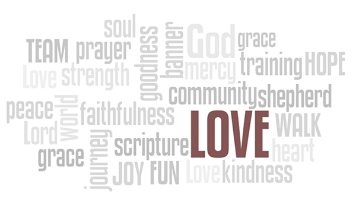
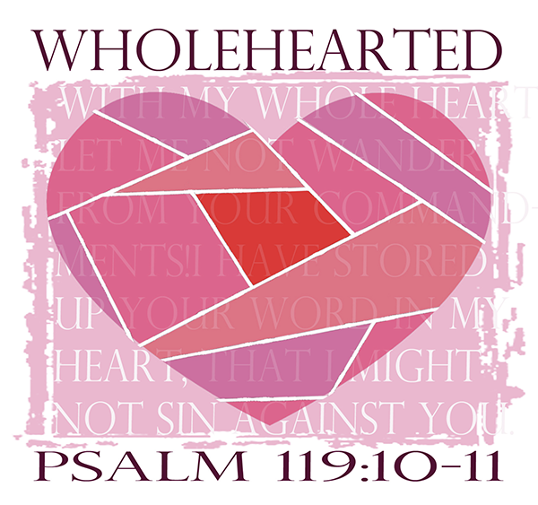
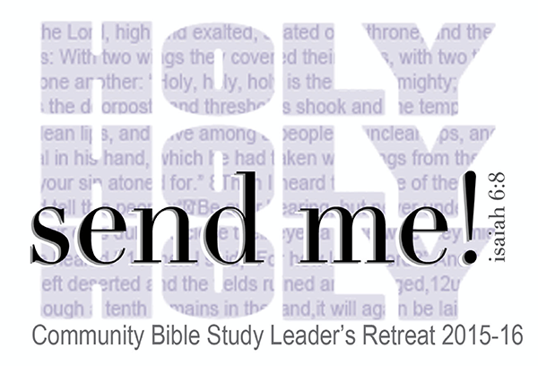
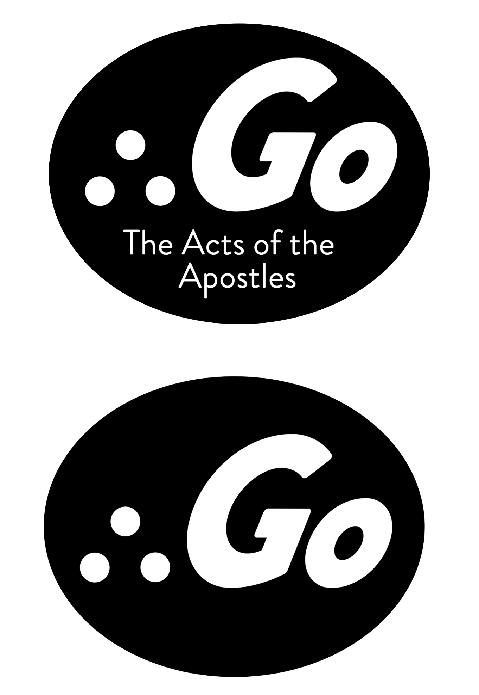
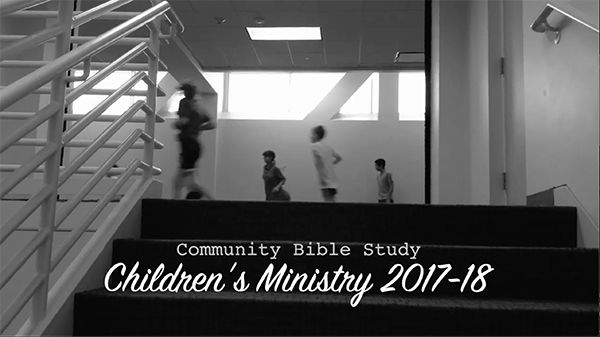
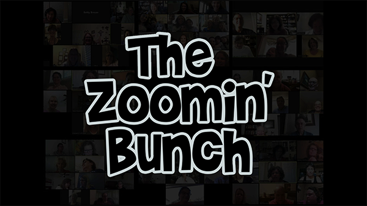

Project 3: Associate Teaching Director
Part of my duties as Associate Teaching Director (ATD) of the Houston Fort Bend Country Community Bible Study Class are to conduct yearly training of small group leaders. There are guidelines provided for what should be trained each year, and I take those and then write the curriculum based on a needs assessment of our group. Each year, we come up with a theme, and then I design logos, name tags and any hand outs that we will need. Below are a few examples.




Videos
I also create videos for openings and end of the year retrospectives:

